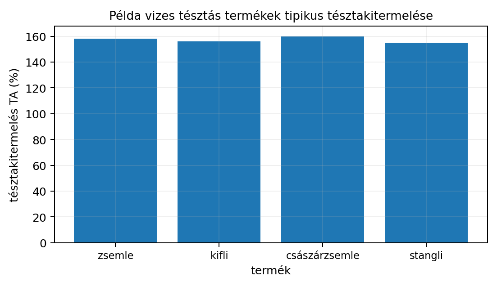
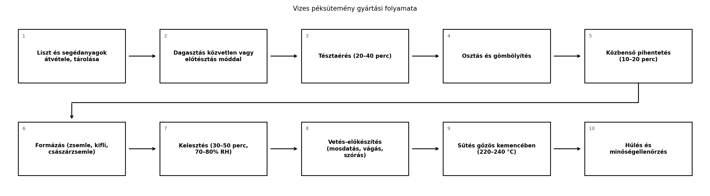

Egy hajnali pékségben a pék az első tétel zsemléhez készül. A rendelés egyszerű: 120 darab 50 g-os zsemle, 80 darab 55 g-os kifli és 60 darab 70 g-os császárzsemle. A liszt ugyanaz, a kemence ugyanaz, mégis a három termék alakja, héja és bélzete eltér. A különbséget nem valamilyen bonyolult adalék adja, hanem a vizes tészta kezelése: a tésztakeménység, az alakítás, a kelesztés és a gőzölés.
Ha a tanuló ezt az alfejezetet megérti, egyetlen alapreceptből többféle péksüteményt tud készíteni, és a hibákat is okából javítja: rájön, miért folyik szét a zsemle, miért reped rossz helyen a kifli, miért sápadt a császárzsemle mintázata.
Képzeld el a vizes tésztát mint egyszerű, de érzékeny alapanyagot. Lisztből, vízből, élesztőből és sóból áll. Nincs benne sok zsiradék, cukor vagy tojás, amely lágyítaná, dúsítaná, ezért a termék jellege elsősorban a víz mennyiségétől és az alakítástól függ. Ugyanaz a tészta lehet ropogós héjú zsemle, hosszúra sodort kifli vagy mintázott császárzsemle.

A diagram azt mutatja, hogy a vizes tészták TA-értéke jellemzően 155–160% körül mozog, tehát 100 kg liszthez körülbelül 55–60 kg vizet adunk. A pontos érték a liszt vízfelvevő képességétől és a termék formájától függ.
Definíció. A vizes tészta olyan sütőipari tészta, amelyben a folyadék alapvetően víz, és a tészta a liszten, vízen, élesztőn, són kívül legfeljebb kis mennyiségű segédanyagot tartalmaz. Jellemzője a viszonylag alacsony zsiradék- és cukortartalom, a rövid vagy közepes tésztaérés, valamint a ropogós, vékony héj és a laza, egyenletes bélzet kialakulása.
A vizes tészta a péksütemények egyik alapvető tésztacsoportja. A lisztre vetített sütőipari százalékban kifejezve jellemzően:
A pontos értékek termékenként és lisztenként eltérnek, ezért minden számítás tanulási példa, amelyet az üzemi technológiai laphoz kell igazítani (ellenőrizendő: a pékség technológiai lapja).
A vizes tészta tulajdonságai:
A vizes tésztát kétféle alapeljárással készíthetjük: közvetlen (egyfázisú) vagy közvetett (előtésztás, kovászos) módon.
Közvetlen eljárás. Minden nyersanyagot egyszerre, vagy a víz egy részét visszatartva, egy adagban dolgozunk össze. A módszer egyszerű, gyors, jól szervezhető, de az íz kialakulásához kevesebb idő áll rendelkezésre. A kész tészta jellemzően rövid, 20–40 perces érlelést igényel, majd osztjuk, alakítjuk, kelesztjük és sütjük.
Közvetett eljárás. A liszt egy részéből, vízből és élesztőből előtésztát készítünk, amelyet rövid ideig érlelünk (15–60 perc), vagy hosszabb ideig vezetünk (például hűtött előtészta). Az előtészta az íz és a tészta stabilitásának kialakulását segíti. A fődagasztásnál az érett előtésztához hozzáadjuk a maradék lisztet, vizet, sót és a többi anyagot.
Példa. Egy 100 kg lisztből készülő közvetett vizes tészta esetén az előtésztába 30 kg lisztet és 18 kg vizet adunk, valamint 1 kg élesztőt, és ezt 30–45 percig érleljük. A fődagasztáskor a maradék 70 kg lisztet, 38–40 kg vizet, 2 kg sót és a maradék élesztőt dagasztjuk hozzá. A számokat tanulási példaként kezeljük.
Összehasonlítás.
Továbbvitt eredmény. A közvetlen és közvetett eljárás megkülönböztetését használjuk a Tejes tészta és tejes tésztából készült péksütemények alfejezetben is, ahol a tej hozzáadása módosítja a tészta savasságát és színét.
A vizes tésztából készült péksütemények általános gyártási sora a következő:

A folyamat egyes lépései a termék alakjától függően eltérnek. A következő alfejezetekben a műveleteket a gyakorlati útmutatóban részletesen bemutatjuk.
Cél: Vizes tésztából zsemlét, kiflit és császárzsemlét készíteni, a technológiai lap paramétereit betartva, a higiéniai és gépbiztonsági szabályok érvényesítésével.
Eszközök és anyagok:
Higiénia. A munka megkezdése előtt ellenőrizd a munkaruha tisztaságát, viselj hajhálót, védőcipőt, ékszert ne viselj. A kezet a technológiai útmutató szerint moss, illetve kesztyű használata esetén a kesztyűt cseréld, ha szennyeződött. A munkafelületet, a szakajtóvásznat, a sütőlemezt és a gépet tisztának, száraznak, idegen anyagtól mentesnek kell látnod. Ebben a termékcsoportban a glutén (búzaliszt) mindig jelen van; szezámmal vagy mákkal szórt változatnál a szezám is allergén. Tojást, tejet nem használunk, de más termékek maradékától a felületet el kell különíteni.
Gépbiztonság. A dagasztógépet, osztó-gömbölyítőt és a kiflisodró gépet csak betanítás után, felügyelettel kezeld. Üzem előtt ellenőrizd a védőburkolatot, a reteszelést, a vészleállító működését. A gép tisztítását csak kikapcsolt, áramtalanított, újraindítás ellen biztosított állapotban végezd. A forgó részek megállása után nyúlj a tésztához. Sose nyúlj a működő gépbe, és sose hidalj át biztonsági kapcsolót.
Lépések:
Nyersanyag-előkészítés. Mérd ki a lisztet, a vizet, az élesztőt és a sót a technológiai lap szerint. A víz hőmérsékletét úgy állítsd be, hogy a dagasztott tészta hőmérséklete 26–28 °C legyen. A dagasztóvíz-hőmérséklet számítását a Tésztahőmérséklet és dagasztóvíz számítása alfejezetben tanultad.
Dagasztás. Közvetlen eljárásnál a lisztet, a vizet, az élesztőt és a sót a dagasztógépbe adagold. Előtésztás eljárásnál először az előtésztát készítsd el, majd a fődagasztásnál a maradék anyagokat add hozzá. Dagasztás közben figyeld a tészta állagát: a jól dagasztott vizes tészta sima, feszes, elválik a csészétől, de nem kemény, nem tépődik.
Tésztaérés. A kidagasztott tésztát takard le, és 20–40 percig pihentesd. Ezalatt az élesztő szén-dioxidot termel, a sikérváz fellazul, a tészta formázhatóbb lesz.
Osztás és gömbölyítés. A tésztát oszd a feladási tömegnek megfelelő darabokra. Zsemlénél 55–58 g, kiflinél 60–62 g, császárzsemlénél 75–78 g feladási tömeggel dolgozz, ha a késztermék tömege 50 g, 55 g és 70 g (tanulási példa). Gömbölyítsd a darabokat, hogy egyenletes, sima felületű, zárt formát kapj.
Közbenső pihentetés. A gömbölyített darabokat 10–20 percig pihentesd, hogy a tészta feszültsége csökkenjen, és a formázás ne szakadjon.
Formázás. A zsemléket gömbalakban hagyod, enyhén lisztezett deszkán. A kiflit hosszúra nyújtod, majd a szélesebb végétől feltekered, és a végét aláhajtod, így kialakul a jellegzetes, hajlított forma. A császárzsemlét lepény alakúra nyújtod, és a peremét öt, egymást átfedő behajtással mintázod, vagy formázó lemezzel (zsemlenyomóval) préseled (a két módszert a lépéssor utáni ábra mutatja). A kézi formázás fogásait a Kézi osztás, gömbölyítés és hosszformázás alfejezetben gyakoroltad.
Kelesztés. A megformázott darabokat szakajtóvászonra vagy sütőlemezre helyezd. A kelesztőkamrában 30–50 percig, 28–32 °C-on, 70–80% relatív páratartalom mellett keleszd (tanulási példa). Az ujjpróba szerint a megkelt tészta lassan, részben visszaugrik, a térfogata 1,5–2-szeresére nő.
Vetés-előkészítés. A kelesztés végén a darabokat mosdatd, vágd, szórd vagy hagyd simán, attól függően, milyen héjat szeretnél. A zsemlét gyakran mosdatják, a kiflit vágják, a császárzsemlét a mintázat után mosdatják, és vetés előtt magvakkal szórják (pl. mákkal, szezámmaggal, ha az üzemi technológiai lap írja elő). A szezámmag jelölésköteles allergén, ezért a szezámszórás a keresztszennyeződés veszélye miatt külön figyelmet érdemel; a mák nem tartozik a 14 fő allergén közé (ellenőrizendő: 1169/2011/EU II. melléklet).
Sütés. A kemencét 220–240 °C-ra melegítsd. A vizes tésztás termékeknél a gőzölés fontos: a sütés első szakaszában a gőz késlelteti a héj kiszáradását, növeli a térfogatot, fényes, vékony héjat ad. A sütési idő 10–16 perc, a termék méretétől függően (tanulási példa). Az átsültséget a héj színe, a tészta belső hőmérséklete és a termék kopogtatásos vizsgálata jelzi.
Hűlés. A sütőből kivett terméket rácson vagy levegős felületen hűtsd. A késztermékeket csak stabil, kihűlt állapotban szabad csomagolni vagy rekeszbe rakni.
A 6. lépés császárzsemle-mintázásának két módját az alábbi képsor mutatja. Kézi hajtogatásnál (A1–A6) a gömböt lepénnyé lapítjuk, a peremét ötször, az óramutató járásával, mindig az előző hajtásra átfedve a közép felé hajtjuk, és az utolsó végét a közepébe nyomjuk. Préselésnél (B1–B3) a zsemlenyomó csillagmintáját függőlegesen, határozottan nyomjuk a gömbre úgy, hogy a minta mély legyen, de a tésztát ne vágja át; ha a technológiai lap így írja, a darabot mintás oldalával lefelé kelesztjük.
Az eredményt a jobb alsó pár mutatja: a helyes császárzsemle mintája éles és szabályos, a hibásé sápadt és elmosódott – ennek okait a Tipikus hibák 3. pontja tárgyalja. A HTML-kiadásban a lépéssor lejátszható, és minden képhez kiírja a lépés szövegét.
Ellenőrzési pontok:
Dokumentálás. A gyártás adatait a pékség naplójában rögzíteni kell: tételszám, mennyiség, tésztahőmérséklet, kelesztési idő, sütési paraméterek, érzékszervi észrevételek. A HACCP-monitoringot a terv szerint kell vezetni (ellenőrizendő: a pékség HACCP-terve).
A vizes tésztás péksütemények gyártásakor a legfontosabb számítások a következők:
Ezeket a Anyagnorma, rendelésből anyagszükséglet és dagasztásonkénti anyagmennyiség, Feladási tömeg, préstömeg és osztási számítások, valamint Tésztahőmérséklet és dagasztóvíz számítása alfejezetekben mutattuk be. Most a vizes tésztás termékekre alkalmazzuk.
Példa 1: Tésztakitermelés (TA) és tésztahozam
Adott: 40 kg BL 80 liszt, 24 kg víz, 1,0 kg élesztő, 1,2 kg só, 0,6 kg adalékanyag (pl. javító), összesen 66,8 kg tészta. A TA:
Behelyettesítve:
A teljes tésztatömegből a tésztahozam számítható: kg tészta/100 kg liszt – ez nem azonos a TA-val, lásd a Tésztahozam, termékhozam, kihozatal és veszteségek alfejezetet.
A vízmennyiség lisztre vetített százalékban:
Ez a vizes tésztás termékeknél jellemző tartományba esik.
Példa 2: Feladási tömeg és préstömeg
Egy 50 g kész tömegű zsemle esetén a sütési + hűlési veszteség összesen 10% (tanulási példa). A feladási tömeg:
Ha 30 darabos kézi osztó-préssel dolgozunk, a préstömeg:
A számításnál az egyszerű kerekítés 1670 g, de a gyakorlatban a pontos tömeg az osztó beállításától függ.
Példa 3: Anyagszükséglet rendelésből
Egy vevő rendel 150 darab 50 g-os zsemlét és 80 darab 55 g-os kiflit. A kész tömeg összesen:
Tegyük fel, hogy a vizes termékeknél a kihozatal (késztermék tömege 100 kg lisztből) 150 kg (tanulási példa). A szükséges liszt mennyisége:
A víz 60%-os adagolással:
Az élesztő 2,5%-kal:
A só 2%-kal:
Mindezek tanulási példák; a pontos értékeket a technológiai lap és a lisztvizsgálat adja.
Termék: Vizes zsemle Termékcsoport: Péksütemény / vizes tészta Kész tömeg: 50 g/db Darabszám: 100 db (feladási tömeg 55,6 g, tésztaszükséglet kb. 5,56 kg + osztási veszteség)
Receptúra-táblázat:
| Nyersanyag | Lisztre vetített % | Mennyiség (kg/g) | Megjegyzés |
|---|---|---|---|
| BL 80 liszt | 100 | 3,400 kg | szobahőmérsékleten |
| Víz | 60 | 2,040 kg | hőfokbeállítás a dagasztóvíz-képlettel |
| Sütőélesztő | 2,5 | 0,085 kg | 85 g |
| Só | 2,0 | 0,068 kg | 68 g |
| Összesen | 164,5 | 5,593 kg | a tészta tömege |
Műveleti paraméterek:
Allergének: glutén (búzaliszt). A receptúrában nincs tojás, tej, szója, dióféle, szezám, hal, rákféle, puhatestű, mustár, csillagfürt, földimogyoró, zeller, kén-dioxid. A keresztszennyeződés a közös eszközökön, a szezámmag-szóró munkahelyen lehetséges (a mák nem a 14 allergéncsoport tagja, de az üzemi allergénkezelési terv érzékenyítő anyagként kezelheti), ezért a mentes állításnál ellenőrizni kell a gyártási sorrendet és a tisztítást.
HACCP- és minőségi pontok: A sütés CCP: a bél maghőmérséklete a sütés végén legalább 96 °C (tanulási példa, ellenőrizendő: HACCP-terv); minőségi jellemzők: a héj színe aranybarna, a bélzet rugalmas, a tömeg 50 g körül, a darabok egyenletesek. A nyersanyag-átvétel (liszt, élesztő) GHP-ellenőrzési pont. A technológiai lap számai tanulási példák (ellenőrizendő: üzemi technológiai lap, gyártói adatlap).
A vizes tésztás termékek minőségi jellemzői:
A késztermék ellenőrzésekor a termékből mintát kell venni, a tömegét mérleggel, a méretét tolómérővel vagy vonalzóval, a bélzetét vágva, szemrevételezve. A sütőipari tömegellenőrzés és érzékszervi minősítés módszerét a Mennyiségi meghatározások és sütőipari szakmai vizsgálatok részben tanulod.
1. Hiba: A zsemle szétfolyik, lapos lesz.
2. Hiba: A kifli reped a feltekerésnél, a felület szakadozik.
3. Hiba: A császárzsemle mintázata sápadt, elmosódott.
4. Hiba: A zsemle alja nyirkos, a bélzet tömör.
A válaszokat a Megoldások elején találod.
1. feladat (A) Sorold fel a vizes tészta fő összetevőit, és írd le, mi jellemzi a tésztát!
2. feladat (A) Egy 40 kg lisztből készült vizes tészta 24 kg vizet tartalmaz. Számítsd ki a TA-t és a víz lisztre vetített százalékát!
3. feladat (B) Egy vevő rendel 200 db 50 g-os zsemlét és 120 db 55 g-os kiflit. A kihozatal 148 kg késztermék 100 kg lisztből. Számítsd ki a szükséges liszt, víz (60%), élesztő (2,5%) és só (2,0%) mennyiségét!
4. feladat (B) Egy kifli kész tömege 55 g, a veszteség 10%. Számítsd ki a feladási tömeget, és 60 darabos tételre a préstömeget, ha kézi osztással dolgoznak!
5. feladat (C) Egy pék vizes zsemléje a sütőből kivéve lapos, szétfolyt, a héj sápadt. Sorold fel a lehetséges okokat, és javasolj legalább három beavatkozást, amelyekkel javíthatja a minőséget!
6. feladat (D) Készíts technológiai lapot (receptúra-táblázat, feladási tömeg, darabszám)! 10 kg liszthez készül vizes kifli. A víz 58%, élesztő 2,5%, só 1,8%. A kifli kész tömege 55 g, az összes veszteség 11%. Számítsd ki a víz, élesztő, só mennyiségét, a tészta tömegét, a feladási tömeget, és határozd meg, hány teljes darab kész kifli készül!
Önellenőrzés – válaszok
1. feladat megoldása
A vizes tészta fő összetevői: liszt, víz, élesztő, só. Jellemzői: alacsony zsiradék- és cukortartalom, feszes, jól formázható tészta, ropogós héj, laza, egyenletes bélzet, rövidebb ideig tartható frissen.
2. feladat megoldása
Adott: , . A tészta tömege: (a többi anyagot most nem számoljuk, mert a TA csak a liszt és a víz arányát adja). Ezért . A víz százaléka: .
3. feladat megoldása
A kész tömeg: .
A liszt: .
A víz: .
Az élesztő: .
A só: .
Ellenőrzés: a tészta tömege . A kihozatal 148 kg/100 kg liszttel éppen készterméket ad. ∎
4. feladat megoldása
A feladási tömeg: .
A préstömeg 60 darab esetén: , azaz kb. 3,67 kg. ∎
5. feladat megoldása
Lehetséges okok:
Beavatkozások:
6. feladat megoldása
Adott: .
A víz: .
Az élesztő: .
A só: .
A tészta tömege: .
A feladási tömeg: . A darabszám: , tehát 262 teljes darab (lefelé kerekítünk, mert a 263. darabra nem elég a tészta; a maradék kb. 38 g). A késztermék tömege , ami a tésztatömegből mellett a kerekítés miatt elfogadható eltérés. ∎
A vizes tészta a péksütemények alapvető tésztacsoportja. Lisztből, vízből, élesztőből és sóból készül, zsiradék- és cukortartalma alacsony, ezért héja ropogós, bélzete laza. Készíthető közvetlen vagy közvetett eljárással; az utóbbi előtésztát használ. A gyártás lépései: dagasztás, tésztaérés, osztás, gömbölyítés, pihentetés, formázás, kelesztés, vetés-előkészítés, sütés, hűlés. A zsemle, kifli, császárzsemle és stangli ugyanabból az alapból különböző alakítás és vetés előtti kezelés által készül. A sütés gőzzel történik, a hőmérséklet jellemzően 220–240 °C, az idő 10–16 perc (tanulási példa). A minőségi jellemzőket a tömeg, a héj, a bélzet, az alak, az íz és a szag alapján ellenőrizzük. A leggyakoribb hiba a túl lágy tészta, a kevés gőz és a hibás formázás. A termék allergénje a búzaliszt (glutén). Ezt az alapot használjuk a Tejes tészta és tejes tésztából készült péksütemények alfejezetben, ahol a tej hozzáadása módosítja a tészta összetételét, színét és ízét.
Az alfejezet a hazai sütőipari hagyományos és korszerű vizes tésztás technológiát követi. A megadott paraméterek (TA, dagasztási idők, hőmérsékletek, páratartalom, sütési idők, feladási tömegek) tanulási példák, nem hatósági előírások. Kiadás előtt ellenőrizendő: